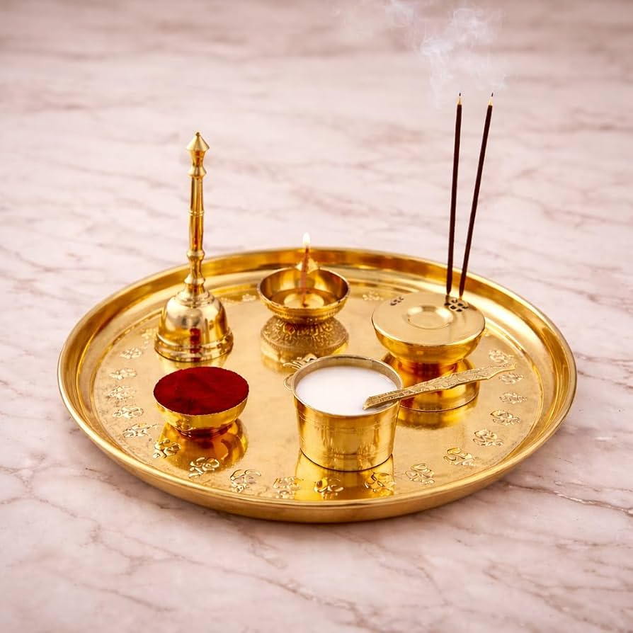

🌸 राधिका फुलबती क्या है?
राधिका फुलबती अपनी खूबसूरती और आकर्षण के कारण लोगों का ध्यान अपनी ओर आकर्षित करती है।
इसका उपयोग पूजा, सजावट और अन्य शुभ अवसरों के लिए किया जा सकता है।
🌺 इसकी खास बातें
🌸 पूजा के लिए उपयोगी
🌸 घर की सजावट में उपयोग
🌸 शुभ अवसरों के लिए उपयुक्त

🙏 पूजा में उपयोग
फूलों का भारतीय पूजा-पद्धति में विशेष महत्व माना जाता है। पूजा के समय फूलों का उपयोग भगवान को अर्पित करने और पूजा स्थल को सजाने के लिए किया जाता है।

🌹 खूबसूरती और सजावट
फूलों की सुंदरता किसी भी स्थान के वातावरण को आकर्षक बना सकती है। इन्हें घर, मंदिर और विभिन्न कार्यक्रमों की सजावट में इस्तेमाल किया जा सकता है।

🌼 हमारी खासियत
हमारा उद्देश्य आपको सुंदर और उपयोगी फूलों से जुड़ी जानकारी एक ही जगह पर उपलब्ध कराना है।